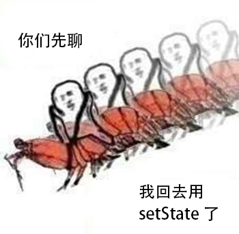
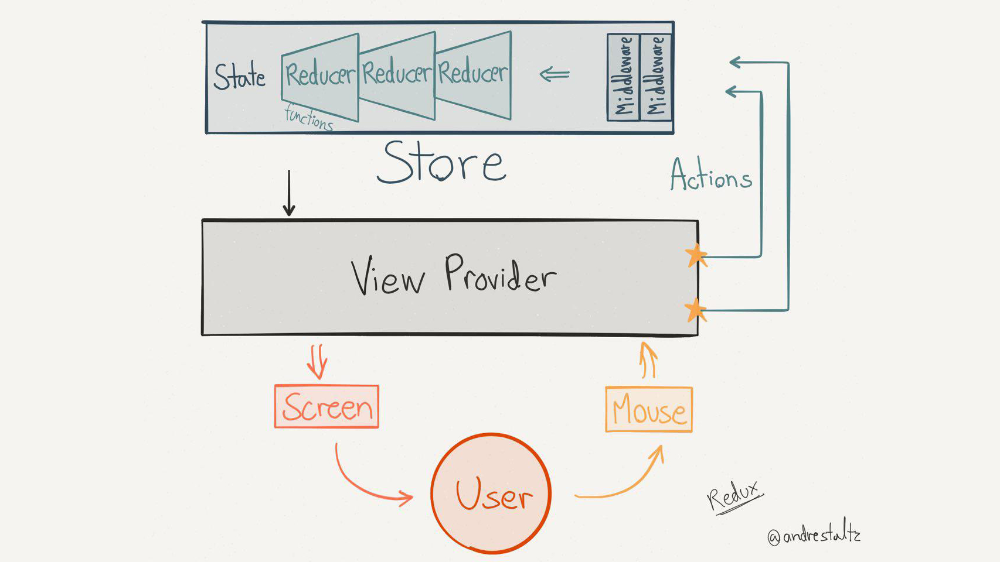
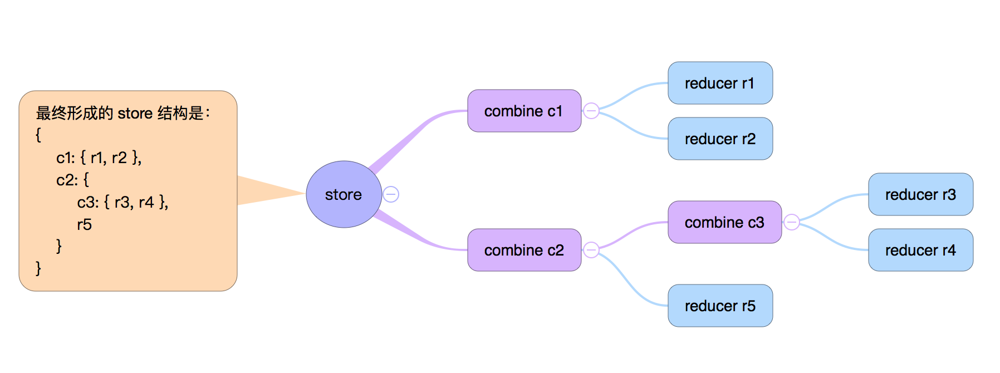
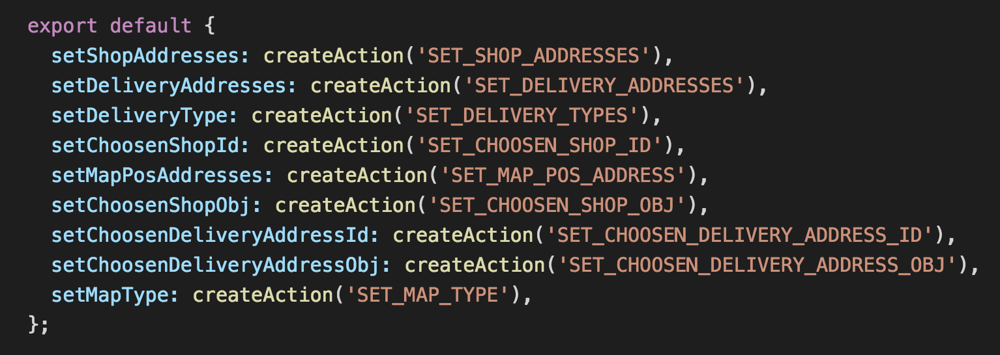
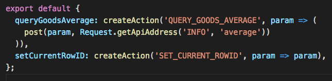

Redux 从放弃到入门
于明昊
为什么是从放弃到入门？
Redux 学习三部曲
- 放弃 别用意大利炮轰蚊子
- 理解使用方式
以及一堆名词 - 掌握运行原理 一个精妙的框架
虽然是抄的 Elm

当事情变得复杂起来……
- 父组件如何跟子组件通信？
props - 子组件如何跟父组件通信？callback
- 大表哥组件如何跟二大爷组件通信？我选择屎亡
组件间存在严重「代沟」
选择 redux 必备条件
- 单页 应用
- 参与 人员多
- 逻辑 复杂
理解使用方式
如何解决组件「代沟」？
发布订阅模式 Pub/Sub publish and subscribe
Facebook 的解决方案：Flux

React 的解决方案：Redux

↑ 别盯着看了，肯定看不懂
为啥看不懂？
因为有很多黑话
Action
type 就是 action 的类型
- 这是一个必填项！
- 并且是 action 的 唯一标识
NO PROBLEM?
等等…… payload 是个啥？
payload [ˈpeɪləʊd]
n. 有效载荷；（航天器、卫星的）装备；
（车辆等的）装载货物；（炸弹、导弹的）爆炸力；
payload 就是 action 装载的货物
- 虽然没有规定，但默认都放这儿
- 某些 中间件 对该字段有要求
action 用来表述 用户行为
type表示用户进行了什么操作payload表示用户怎样进行的操作- 最终被传递给
dispatch
ActionCreator
创造 action 的函数
- 一般是 纯函数
- 输入可以多种多样，输出必须符合
action的格式 - 尽可能的在这里处理 与显示无关的逻辑
Dispatch
dispatch [dɪˈspætʃ]
vt. 派遣，调度；（迅速地）发出；
迅速处理，迅速了结；处决（罪犯等）；
顾名思义 dispatch 是一个调度行为
- 把代表 用户行为 的
action传递给代表 数据调度 的reducer - 中间件 其实是对 dispatch 的处理
- 一般接受的是
ActionCreator的结果
Reducer
reducer [rɪ'dju:sə]
n. 减速器；缩减者，减压器，还原剂；
↑ 没有一个意思能表示 reducer 是干啥的
让两者灵魂相通的方式是 combineReducer

reducer 表示可 被缩减 的状态 调度器
- 多个 reducer 可以通过
combineReducer来进行缩减 - 层级加深，但 reducer 内部无需关注
- 最终汇集成一个大的
store
Middleware
中间件
- 传统语义下指的就是 弥合底层差异，提供顶层滋瓷 的软件
- TJ 搞了 Express 之后，中间件变成了 框架的扩展手段
Redux 的中间件
官方文档是这样说的：
『Redux 中间件与 Express 和 Koa 的中间件解决的问题并不相同，但二者在概念上却高度一致。从一个action被dispatch，到这个action到达reducer，中间件在这两个时刻中间提供了一个第三方扩展的植入点。』
中间件核心思想 —— thunk
包装原生 dispatch，在中间件内部选择时机进行 dispatch。
State
state 是统一数据集合
- 这份数据就是 combineReducer 之后生成的大对象
- 可通过
mapStateToProps分发到各个组件，辅助更新
Store
store 是一个提供 state 存储和各种 api 的实例
dispatchgetStatesubscribe
redux 希望维护一个 单一 store
再来看看这个图
更好的接入 react
更好的接入 react
react-redux
RNPlus - Redux
RNPlus - Redux
业务中用的工具 redux-actions
问题？
大量逻辑还是在 view、reducer 中处理

尽量把数据逻辑放到 ActionCreator 中

问题？
用不了 redux-thunk……
直接用原生的方式……
详解
- 对象的属性对应
action.type - 第一个参数是当前的
state - 第二个参数是传过来的
action handleActions第二个参数是initialState
问题？
不要在 reducer 里 dispatch！
Q&A
- EOF -